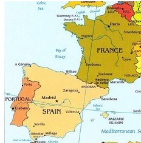

La nube de cenizas, que alcanza ya una longitud de 17 kilómetros, ha obligado a cerrar hoy el espacio aéreo islandés.
Barça-Manchester: Peligra el viaje en avión del equipo blaugrana y de los aficionados. Los expertos aconsejan viajar en medios alternativos de transporte. Los aficionados con entrada para Wembley pueden tener problemas para llegar.
La participación a las 14.00 sube 1,7 puntos respecto a 2007
El 35,86% de los ciudadanos con derecho al voto se habían acercado a las urnas a la 14.00 horas frente al 34,15% de hace cuatro años con el 95% de mesas recontadas.- Los políticos llaman al voto en una jornada marcada por el 15-M.- La jornada transcurre con normalidad
"Si me llamáis, ya sabéis que podéis contar conmigo", dijo el presidente en Cáceres
"Os pido el voto encarecidamente con la autoridad que da el no pedirlo para uno mismo". Con esta tarjeta de visita, José Luis Rodríguez Zapatero se ha presentado en la mayoría de las diez plazas en que ha participado en esta campaña electoral, la última en que ha ejercido como protagonista desde que fue elegido secretario general del PSOE, en julio de 2000. Tras su anuncio el 2 de abril de no concurrir a otro mandato, el eje de la campaña de 2012 corresponderá al nuevo candidato a presidir el Gobierno y él se limitará a ser telonero de lujo.
La frase es la expresión de cómo empieza a alejarse de sus casi 11 años de responsabilidad al frente del PSOE y cómo cada vez más su papel se parecerá, en expresión de un colaborador, al de padre protector que ejerce Felipe González sobre el partido desde que dejó la secretaría general, en 1997.
En algunos lugares, la despedida de Zapatero ha sido aún más explícita. El miércoles, en Cáceres, donde celebró su mitin más caluroso, se le notó conmovido al decir a los socialistas extremeños: “Si me llamáis, ya sabéis que podéis contar conmigo”. También lo dijo el 17 de abril, en la Fiesta de la Rosa de los socialistas vascos, en Durango, donde se ofreció a colaborar por la paz en Euskadi. Y en León anunció que regresaría a vivir cuando deje La Moncloa.
Lo que se presentaba como una campaña de despedida de Zapatero, complicada por la crisis y por las adversas encuestas, pero con un guión claro, se ha visto quebrado en su último tramo por la irrupción de las protestas de indignados el pasado domingo, 15 de mayo, con la Puerta del Sol madrileña como epicentro.
La abstención es la gran incógnita en Lorca. Tras los terremotos, cientos de ciudadanos han abandonado sus hogares, en gran parte dañados por el temblor, para alojarse en casas de campo o en sus segundas residencias de Águilas y otros municipios de la costa. Por eso, los partidos esperaban un descenso importante de la participación, aunque, por el momento no ha sido tan grave. Hasta las dos de la tarde había acudido a votar el 34,72% del censo, mientras que en 2007, a la misma hora, la participación había sido del 38,24%. En las pasadas municipales, una vez hecho el recuento total, solo el 52,31% había ejercido su derecho. El porcentaje también es significativamente menor al de la media de la región de Murcia, 39,08%.
La petrolera PetroXXX es una multinacional que opera en todos los países árabes y en Venezuela.
Los estudios de INTERNEWS
Hoy: España y Francia

Son países limítrofes pero con realidades económicas muy diferentes y la debilidad de la estructura económica española ha quedado en evidencia en el modo de afrontar la crisis...
En la última década, el gigante textil ha acelerado su expansión hasta superar los 5.000 establecimientos en un total de 78 países de los cinco continentes.
Los expertos del FMI y la Unión Europea llegarán esta semana a Atenas para revisar en detalle el nuevo programa, del que dependerá un rescate adicional de unos 60.000 millones de euros
El Deportivo, atenazado e incapaz de marcar al Valencia, baja a Segunda tras 20 años en la élite
Deportivo a segunda
La etapa más gloriosa de la historia del Deportivo escribió anoche un punto y aparte con un doloroso descenso a Segunda. El equipo que desde una esquina desafió y en ocasiones venció a los grandes del fútbol español y que puso a A Coruña y Galicia en el mapa futbolístico mundial regresa a Segunda justo cuando el próximo mes se van a cumplir 20 años de su último ascenso. Se marcha entre los suyos tras apagarse frente al Valencia en un esfuerzo tan descomunal como inocuo, prisionero de su falta de puntería y de una serie de resultados inesperados en las últimas jornadas, los que propician que por primera vez un equipo pierda la categoría tras sumar 43 puntos.
Formaciones de los equipos.Deportivo 0 - Valencia 2Deportivo:
Aranzubia;
Laure, Lopo, Colotto, M. Pablo;
Juan Rodríguez, Rubén Pérez,
Guardado (Lassad, m. 80);
Valerón; Adrián y Riki (Xisco, m. 66).
No utilizados: Manu, Seoane, Rochela,
Juan Domínguez y Pablo Álvarez.
Valencia:
César;
Bruno, Navarro, Topal, Dealbert, Jordi Alba;
Joaquín, Albelda, Banega, Mata (Jonas, m. 71);
y Aduriz (Soldado, m. 81).
No utilizados: Moyà, Stankevicius, Maduro,
Mathieu y Tino Costa.
Goles: 0-1. M. 4. Aduriz. 0-2. M. 90.
Soldado, de disparo raso en un contraataque.
Árbitro: Muñiz Fernández. Amonestó a Rubén Pérez
y a César.
Unos 35.000 espectadores en el estadio de Riazor.
El corredor del Euskaltel logra en la etapa reina la quinta victoria de etapa española en este Giro.
El líder, Contador, acaba tercero y ya les saca más de cuatro minutos a Scarponi y Nibali en la general
Gran etapa del giro
A punto de cumplir 27 años y en su primera participación en un Giro de Italia, ha ganado Mikel Nieve nada menos que la etapa reina de la corsa rosa, la que ponía fin al tríptico dolomítico, la que todo el mundo señalaba como la más dura de la prueba, la que, por el camino, en sus más de siete horas de duración, ha dejado numerosos abandonos. Y lo ha hecho con una actuación soberbia, colándose entre los numerosos escapados desde los primeros kilómetros y sin dejarse cazar ya en toda la jornada por el grupo del líder, Alberto Contador (Saxo Bank), al que durante muchos kilómetros ha arrebatado virtualmente la maglia rosa. Segunda victoria consecutiva de un corredor del Euskaltel y quinta victoria de un español en la 94ª edición del Giro. El de Pinto ha sido tercero y deja en la general a Scarponi (Lampre) a 4m 20s y a Nibali (Liquigas) a 5m 11s, segundo y tercero en la general.
Alonso arranca de manera espectacular pero el Ferrari se viene abajo
Termina quinto, doblado por Hamilton y Vettel, ganador de nuevo
El alemán se dispara al frente de la general, con 41 puntos sobre Lewis
Vettel sigue primero
Quinto: plaza dolorosa sobre todo porque la victoria fue de nuevo para Vettel, que se dispara en la clasificación del Mundial, con cuatro victorias en cinco pruebas. Botín para cerrar la tienda en verano si sigue en la misma tónica. Y el español a un mundo, a 67 puntos, agarrado a la esperanza de una remontada que ahora mismo parece una quimera.
Su monoplaza perdió fuerza tras una partida de película, con sabor clásico, de las que Alonso tenía como imagen de marca en sus años gloriosos en Renault, cuando devoraba rivales bajo el semáforo. Volvió a bailar en el asfalto de izquierda a derecha, gracias al embrague del F150, poderoso al fin en los primeros metros. Aceleró valiente tras el rebufo de Vettel y ambos cazaron al líder Webber, primera pole que no gana en Montmeló tras una década dominada por el primero de la parrilla.
Clasificación: Gran Premio de España
1 S. Vettel Red Bull 01:39:03.301
2 L. Hamilton McLaren 01:39:03.931
3 J. Button McLaren 01:39:38.998
4 M. Webber Red Bull 01:39:51.267
5 F. Alonso Ferrari +1 vuelta
6 M. Schumacher Mercedes GP +1 vuelta
7 N. Rosberg Mercedes GP +1 vuelta
8 N. Heidfeld Lotus Ren. +1 vuelta
9 S. Pérez Sauber +1 vuelta
10 K. Kobayashi Sauber +1 vuelta
MARADONA
Voy a pisarles la cabeza hasta a los nietos de Grondona
Furiosa reacción del ex ídolo contra el jefe de la AFA
Maradona también amenazó a su ex amigo y seleccionador Batista
Diego Maradona ha declarado la 'guerra' al presidente de la Asociación del Fútbol Argentino, Julio Grondona, porque éste sugirió que 'El Diez' sigue enganchado a las drogas, y a Sergio 'el Checho Batista', su reemplazante como seleccionador nacional y ex compañero de casaca albiceleste en el Mundial México 86.
Maradona da la nota
"Esto no queda acá. Esta vez voy a pisar al acelerador a fondo y voy a pisarle la cabeza al que sea... Julio (Grondona), Humberto, Julito (ambos hijos del titular de la AFA)" todos, hasta los nietos", bramó el ex ídolo del balompié.
Grondona había dicho días atrás que "yo estoy viejo pero sano. No como otros (por Maradona) que no lo están y no por problemas naturales sino por problemas creados".
"Hace siete años que no tomo drogas. Soy el primero que se va a hacer el análisis (antidoping) correspondiente. Esto va la Justicia directamente. Que lo sepe y se lo grabe: Voy por la familia de Grondona", amenazó en una entrevista con el diario Clarín.
Resultados
Primera división jornada 38
Málaga 1 - 3 Barcelona
Real Madrid 8 - 1 Almería
Hércules 0 - 0 Sporting
Mallorca 3 - 4 At. Madrid
Racing 1 - 2 Athletic Club
Real Sociedad 1 - 1 Getafe
Espanyol 2 - 3 Sevilla
Deportivo 0 - 2 Valencia
Osasuna 1 - 0 Villarreal
Levante 1 - 2 Zaragoza
Agustín Almodóvar, productor y guionista de 'La Piel que Habito', recogió el premio y lo dedicó "a lo que la juventud representa, porque son el futuro del cine y de la sociedad.
Miscelánea
Salud
Sonidos agresivos
Determinados sonidos pueden provocar cambios en el metabolismo y la biosíntesis de los diversos procesos enzimáticos. Recientes investigaciones sobre musicoterapia confirman antiguos conocimientos sobre la influencia de la música en general, y sobre determinados instrumentos musicales para conseguir ciertos efectos en el cuerpo y en el alma humana.
Con la multimedia debemos tener precaución, especialmente cuando hay un exceso de acción, vídeos como estos tienen el mismo efecto nocivo que algunos videojuegos.
El avance de la tecnología ha hecho que estos aparatos incorporen funciones que no hace mucho parecían futuristas,
como juegos, reproducción de música MP3 y otros formatos, correo electrónico,
SMS, agenda electrónica PDA,
fotografía digital y video digital, videollamada, navegación por Internet y hasta Televisión digital.
Las compañías de telefonía móvil ya están pensando nuevas aplicaciones para este pequeño aparato que nos acompaña a
todas partes. Algunas de esas ideas son: medio de pago, localizador e identificador de personas.